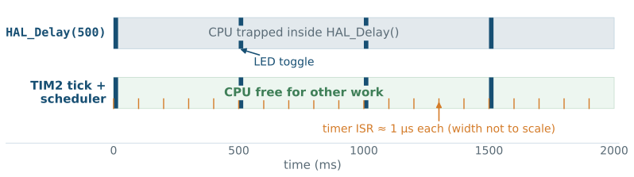
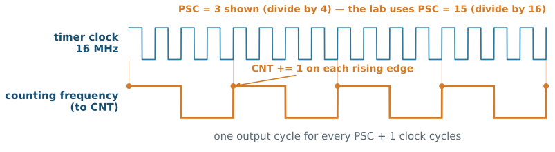
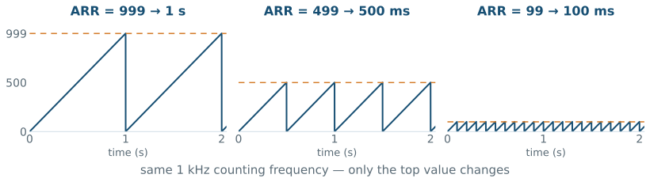
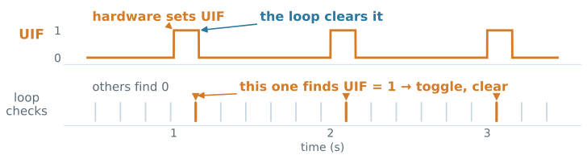
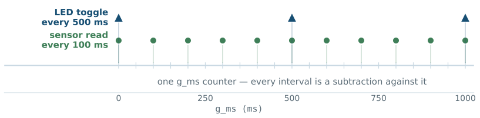

L07 - Timers
These two numbers make the timer hardware raise one event every second—while your program does something else.
By the end, you will explain both numbers, replace HAL_Delay() with them, and prove the result in the register view.
01 WEEK 4: write GPIO registers directly.
02 WEEK 5: drive the same registers through HAL.
03 WEEK 6: let a button interrupt the main loop.
04 TODAY: let hardware count time so the CPU does not have to.
01 Trace the timer pipeline: clock → prescaler → counter → auto-reload → update event.
02 Calculate PSC and ARR for a required period from the real clock frequency.
03 Use a timer update event by polling and by interrupt.
04 Build a 1 ms tick that schedules several tasks without blocking.
05 Verify a timer’s configuration and counting in the SFR view.
The Week 4 blink—and every version since—wastes the CPU while it waits:
while (1) {
HAL_GPIO_TogglePin(GPIOA, GPIO_PIN_5);
HAL_Delay(500); // CPU does nothing useful here
}1 What is the CPU doing during the 500 ms?
2 Could the Week 6 button event be serviced during the delay? Could the main loop react to it?
The interrupt still fires and the callback still runs—but the main loop cannot respond until HAL_Delay returns.

Same LED behavior, opposite CPU budgets. Today builds the bottom row.
HAL_Delay was a timer all alongSysTick—a timer inside the Cortex-M core—has been ticking every millisecond since Week 1. HAL_Delay merely waits on it.
01 HAL configures SysTick at startup; its interrupt increments HAL’s own millisecond counter.
02 HAL_Delay(500) reads that counter in a blocking loop—the counting was never the problem, the waiting was.
03 Today’s tick is the same idea on a timer you control, consumed without trapping the CPU.
Deep dive: PM0214 Rev 10, §4.5 SysTick timer — p. 246.
A timer is a hardware counter that increments at a fixed rate and raises an event when it reaches a chosen value.
Every slide today configures or consumes one stage of this pipeline.
On our lab configuration—the default 16 MHz HSI with all bus prescalers at 1—every timer counts 16 000 000 ticks per second before prescaling.
01 The timer clock comes from the APB bus that carries the timer (TIM2 is on APB1).
02 If an APB prescaler is ever set above 1, the timer clock is twice that bus clock—check before calculating.
03 Every period calculation today starts from the real 16 MHz—not from a number found in an online example.
Deep dive: RM0368 Rev 6, §6.2 clock tree — p. 94.
The prescaler divides the timer clock by PSC + 1 before it reaches the counter.

PSC is 16-bit (0…65535): 15 → 1 MHz (one tick per µs) · 1599 → 10 kHz · 15999 → 1 kHz (one tick per ms). The reference manual’s name for this is the counter clock (CK_CNT).
CNT increments once per prescaled tick—in hardware, in parallel with your program:
▸ advance to run the counter
UIF is a pending bit in TIM2->SR—the same idea as the EXTI pending bit in Week 6.
In-lecture demo: interactive counter animation.
ARR holds the top value, so the counter visits ARR + 1 states (0 through ARR):

For one update per second from 16 MHz:
Split the division so both values fit in 16 bits and the intermediate frequency is a round number you can reuse—1 kHz gives millisecond resolution for free.
The opener’s two numbers are exactly these: Prescaler = 15999, Period = 999.
Both divisions use the register value plus one:
01 A prescaler of 0 divides by 1—dividing by zero would be meaningless.
02 ARR = 999 means the counter visits 1000 states: 0 through 999.
03 Forgetting a +1 makes every period slightly wrong—a classic timer bug.
Registers you write once (PSC, ARR), one that never stops (CNT), and one bit the hardware sets for you (UIF).
The real thing: RM0368 Rev 6, Fig. 87 General-purpose timer block diagram — p. 317 — find every block from this slide in it.
Required: one update event every 200 ms from the 16 MHz timer clock.
1 Keeping the 1 kHz counting frequency, what is PSC?
2 What is ARR?
3 Give a second PSC/ARR pair that produces the same period.
PSC = 15999, ARR = 199. Alternatives abound: PSC = 1599 (10 kHz) with ARR = 1999 also gives 200 ms.
TIM_HandleTypeDef htim2;
htim2.Instance = TIM2;
htim2.Init.Prescaler = 15999; // 16 MHz -> 1 kHz
htim2.Init.CounterMode = TIM_COUNTERMODE_UP;
htim2.Init.Period = 999; // 1 kHz -> 1 s
HAL_TIM_Base_Init(&htim2);01 The handle structure collects the timer’s settings—GPIO_InitTypeDef’s pattern again.
02 Period is the HAL’s name for the ARR value.
03 In a CubeMX project this code is generated as MX_TIM2_Init().
Deep dive: UM1725 Rev 8, TIM base functions — p. 1065.
EGRNew PSC and ARR values do not necessarily act immediately:
01 PSC is always buffered: the new value is copied into use at the next update event—up to one full period later.
02 ARR is buffered only when auto-reload preload (ARPE) is enabled—the HAL default writes it immediately.
03 Writing the UG bit in TIM2->EGR forces an update event now: the buffered prescaler loads and CNT resets. This is exactly why the lab’s bare-metal init writes TIM2->EGR.
Changing a running timer’s speed? First ask when the new values take effect.
HAL_TIM_Base_Start(&htim2);
while (1) {
/* other work runs freely here */
if (__HAL_TIM_GET_FLAG(&htim2, TIM_FLAG_UPDATE) != RESET) {
__HAL_TIM_CLEAR_FLAG(&htim2, TIM_FLAG_UPDATE);
HAL_GPIO_TogglePin(GPIOA, GPIO_PIN_5); // once per second
}
}
Check the flag, act, clear the flag—an uncleared UIF reads as an instant new event.
Polling still spends loop time asking. The update event can instead take the exact path B1’s press took:
HAL_NVIC_SetPriority(TIM2_IRQn, 0, 0);
HAL_NVIC_EnableIRQ(TIM2_IRQn);
HAL_TIM_Base_Start_IT(&htim2); // start + enable update interruptvoid HAL_TIM_PeriodElapsedCallback(TIM_HandleTypeDef *htim)
{
if (htim->Instance == TIM2) {
HAL_GPIO_TogglePin(GPIOA, GPIO_PIN_5);
}
}01 Start_IT sets UIE in TIM2->DIER; the NVIC lines are Week 6’s checklist with a new request name.
02 HAL clears UIF, then calls the one shared callback—check htim->Instance.
03 CubeMX generates TIM2_IRQHandler() in stm32f4xx_it.c—verify it exists; do not write your own.
Week 6’s rules apply unchanged:
01 Check which instance caused the interrupt.
02 Record that the event happened—set a flag, count a tick.
03 Return quickly. No HAL_Delay(), no printing, no application logic.
A 1 ms timer callback that takes 2 ms to run is a program that falls behind forever.
The most useful timer configuration in embedded practice—one fast timer, one counter:
volatile uint32_t ms = 0;
/* PSC = 15 -> 16 MHz / 16 = 1 MHz
ARR = 999 -> 1 MHz / 1000 = 1 kHz -> update every 1 ms */
void HAL_TIM_PeriodElapsedCallback(TIM_HandleTypeDef *htim)
{
if (htim->Instance == TIM2) {
ms++;
}
}ms is the Week 6 button_event pattern generalized: the callback reports, main() consumes. volatile for the same reason.
uint32_t t_led = 0, t_sample = 0;
while (1) {
if ((ms - t_led) >= 500U) { // every 500 ms
t_led = ms;
HAL_GPIO_TogglePin(GPIOA, GPIO_PIN_5);
}
if ((ms - t_sample) >= 100U) { // every 100 ms
t_sample = ms;
/* read a sensor */
}
/* other work continues */
}Unsigned subtraction keeps every schedule correct when ms eventually wraps—the same arithmetic as Week 6’s debounce.

Add a third interval and the timer configuration does not change—only one more subtraction in the loop.
The scheduler reschedules with t_led = ms;. Suppose one loop pass occasionally takes 30 ms because of other work.
1 Can a toggle be late? By how much, at worst?
2 Does the error stay bounded, or accumulate over the next toggles?
3 What changes if the reschedule line becomes t_led += 500U;?
Both versions can be up to 30 ms late once. t_led = ms re-anchors to the late moment, so every delay pushes all later toggles—error accumulates. t_led += 500U keeps deadlines anchored: one late toggle, no long-term drift.
Leave ARR at its 32-bit maximum and the counter itself becomes a clock:
/* PSC = 15 -> 1 MHz: CNT increments once per microsecond */
uint32_t start = TIM2->CNT;
do_work();
uint32_t elapsed_us = TIM2->CNT - start; // wrap-safe01 No interrupts at all—just read the counter twice and subtract.
02 TIM2 and TIM5 are the F401’s 32-bit timers: at 1 MHz they wrap after ~71 minutes.
03 This is how you measure code instead of guessing.
| Family | F401 instances | Adds |
|---|---|---|
| General-purpose, 32-bit | TIM2, TIM5 |
long counts, all GP features |
| General-purpose, 16-bit | TIM3, TIM4, TIM9–TIM11 |
capture, compare, PWM |
| Advanced-control | TIM1 |
complementary outputs, motor control |
Every family shares today’s time base: clock → PSC → CNT → ARR → update. PWM and input capture (Week 9) are additions to it, not replacements.
Deep dive: RM0368 Rev 6, §13 TIM2 to TIM5 — p. 316.
| Register | Holds | Today’s use |
|---|---|---|
TIM2->PSC |
prescaler value | set once |
TIM2->ARR |
top value | set once |
TIM2->CNT |
live count | watch it move |
TIM2->SR |
status flags — UIF is bit 0 |
hardware sets, software clears |
TIM2->DIER |
interrupt enables — UIE is bit 0 |
lets UIF raise the request |
TIM2->CR1 |
control — CEN is bit 0 |
starts the counter |
STM32 HAL
Week 5’s conclusion holds: same registers, different interface. The clock-enable-first rule from Week 4 also holds—TIM2 is on APB1, not AHB1.
01 Pause after init: TIM2->PSC and TIM2->ARR hold your two numbers.
02 Resume, pause again: TIM2->CNT has moved—hardware counted while the CPU was halted-and-resumed.
03 Watch TIM2->SR bit 0: UIF sets on each rollover; your code (or HAL) clears it.
04 In interrupt mode, a breakpoint in the callback proves the whole path.
A successful build proves none of this. The SFR view does.
01 WRONG CLOCK ASSUMED: an online example’s 84 MHz math on our 16 MHz configuration—periods 5× too long.
02 MISSING +1: PSC = 16000 or ARR = 1000 where 15999/999 was meant.
03 CLOCK NOT ENABLED: TIM2 needs its APB1ENR bit—AHB1 was the GPIO bus.
04 NVIC FORGOTTEN: the update event fires, UIF sets, and nothing runs.
05 FLAG NOT CLEARED: polling code without CLEAR_FLAG sees an eternal event.
06 SLOW CALLBACK: work that belongs in main() running at interrupt priority.
Blink LD2 every 500 ms from a TIM2 update interrupt—no HAL_Delay() anywhere—then build the 1 ms tick and schedule two independent intervals.
You will show:
PSC/ARR calculated from 16 MHz, with the +1s explained;HAL_TIM_PeriodElapsedCallback runs;TIM2->CNT moving and UIF setting in the SFR view;ms counter;✓ Trace the pipeline: clock → PSC → CNT → ARR → update event.
✓ Calculate PSC and ARR for a required period, with the +1 rule.
✓ Consume an update event by polling and by interrupt.
✓ Build and use a 1 ms tick with wrap-safe scheduling.
✓ Verify timer behavior in the register view.
Next: PWM—the same counter, with an output pin attached to a compare value.
01 FREQUENCY: What is the counting frequency from the 16 MHz timer clock?
02 PERIOD: How often does the update event fire?
03 PATH: Name the register bit that records the event and the function that HAL finally calls.
04 POLLING: Which two operations must a polling loop perform on UIF?
05 EVIDENCE: Which SFR observation proves the counter is running?
Every concept in this lecture, with page-linked sources: academic references.
EE5203 - L07